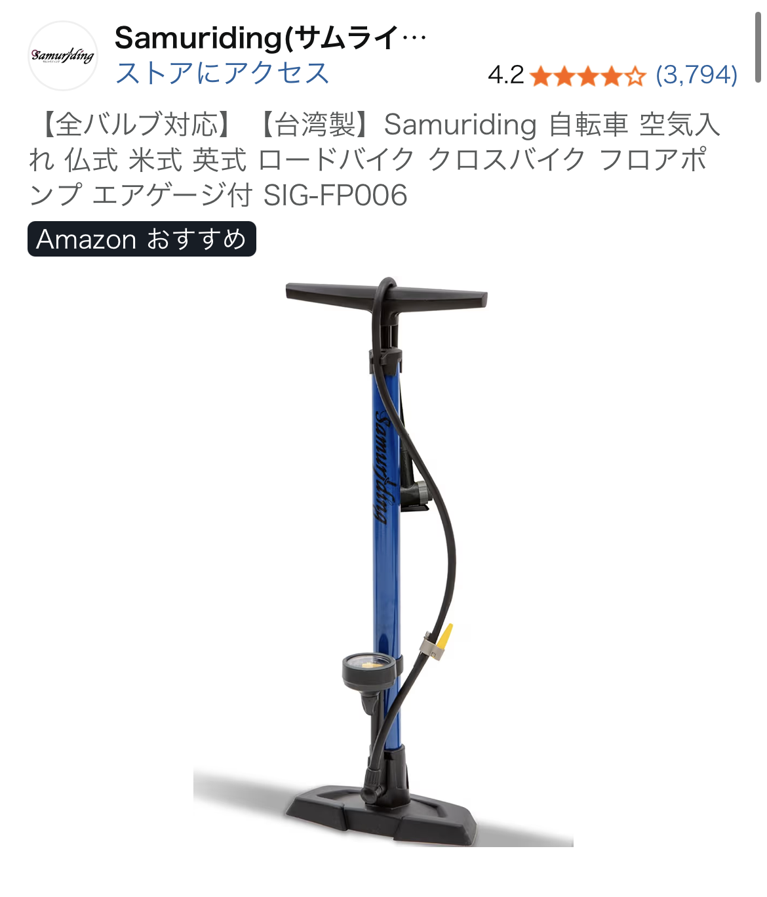

マルチアタッチメント自転車用エアポンプを実際に使って分かったメリット・注意点【クロスバイク対応】
最終更新日：2024-10-19｜カテゴリ：日用品（自転車メンテナンス）

クロスバイク用に「とりあえず1本」持っておきたいエアポンプ
クロスバイクや通勤用自転車を持っていると、必ず必要になるのが「空気入れ」です。 とくにスポーツバイクは空気圧管理がシビアで、空気が抜けたまま乗り続けるとパンクやリムのダメージにつながります。 今回レビューするのは、複数のアタッチメントが付属し、さまざまな自転車に対応できるマルチアタッチメント式エアポンプです。
実際にクロスバイク用として使用したところ、「星5つ中4つ」という評価どおり、 日常使いの空気入れとしては十分満足できる性能でした。 一方で、エアゲージの“流量の確からしさ”には少し疑問が残る部分もあり、 メリットと注意点を整理しておくと、購入後のギャップを減らせると感じました。
複数アタッチメントで「ほぼ全部の自転車」に対応できる安心感
このエアポンプの一番の魅力は、アタッチメントが複数付属していることです。 付け替えることで、クロスバイクに多い仏式バルブ、一般的なママチャリに使われる英式バルブ、 さらにはスポーツバイクで使われる米式バルブなど、さまざまなバルブ形式に対応できます。
家族で自転車の種類がバラバラな場合でも、ポンプを1本用意しておけば、 「この自転車には空気が入れられない」という状況を避けられます。 とくに、クロスバイク＋ママチャリ＋子ども用自転車のような組み合わせの家庭では、 マルチアタッチメント式のエアポンプはかなりコスパの良い日用品と言えます。
アタッチメントの付け替え自体も難しくなく、ねじ込み式や差し込み式など、 直感的に扱える構造になっていることが多いです。 一度使い方を覚えてしまえば、次からは数秒でバルブに合ったアタッチメントに交換できるので、 週末のメンテナンスや出かける前のチェックがぐっと楽になります。
エアゲージ付きで「空気がちゃんと入っているか」を目視確認できる
レビューでも触れられているとおり、このエアポンプにはエアゲージ（空気圧計）が付属しています。 スポーツバイクに慣れていないと、「どのくらい空気を入れればいいのか」が分かりにくいのですが、 エアゲージがあることで、ある程度の目安を持って空気を入れられます。
ただし、流量（空気圧表示）の確からしさにはやや疑問が残るというのが正直なところです。 高級フロアポンプや専用の空気圧計と比べると、表示がややアバウトな可能性があります。 そのため、「レース用にシビアな空気圧管理をしたい」「指定空気圧を1psi単位で合わせたい」といった用途には向きません。
一方で、空気が漏れることなく入っているかを目視で確認できるという点では非常に優秀です。 ゲージの針がしっかりと上がっていき、バルブ周りから「シュー」という音がしなければ、 空気がきちんとタイヤ内部に入っていることが分かります。 日常の通勤・通学や週末サイクリングレベルであれば、この“目視での安心感”だけでも十分に価値があります。
実際に使って感じたメリット
1. クロスバイク用としては必要十分な性能
実際にクロスバイクに使用したところ、空気が漏れることなくスムーズに充填できることが確認できました。 バルブにしっかりと差し込んでレバーを固定すれば、ポンピング中に抜けてしまうこともなく、 タイヤがしっかりと張っていく感覚が手に伝わります。
また、フロアポンプタイプであれば、足元で安定させながらポンピングできるため、 手押しの携帯ポンプよりも少ない回数で必要な空気圧まで持っていけます。 「週に1回、出かける前に空気を入れる」程度の使い方であれば、ストレスなく使い続けられるレベルです。
2. 家庭用の日用品としてコスパが高い
マルチアタッチメント式のエアポンプは、1本で家中の自転車に対応できるため、 結果的にコスパの良い日用品になります。 自転車ごとに専用ポンプを用意する必要がなく、保管スペースも最小限で済みます。
また、Amazonで購入できるタイプであれば、価格も比較的手頃なことが多く、 「とりあえず1本ちゃんとしたポンプが欲しい」というニーズにぴったりです。 星5つ中4つという評価は、価格と性能のバランスが良い“ちょうどいいポンプ”であることの表れだと感じました。
購入前に知っておきたい注意点
1. エアゲージの数値は“目安”と割り切る
先述のとおり、エアゲージの表示は高精度な計測器と比べると誤差が出る可能性があります。 そのため、「ゲージの数値＝完全に正確な空気圧」とは考えず、あくまで目安として使うのが賢い使い方です。
実用的には、タイヤのサイドウォールに記載された推奨空気圧の範囲を確認し、 その範囲内に入るように大まかに合わせる程度で十分です。 乗り心地や転がりの軽さを体感しながら、自分なりの“ちょうどいい空気圧”を見つけていくと失敗しにくくなります。
2. 収納スペースとホースの取り回しをチェック
フロアポンプタイプはどうしても高さが出るため、保管場所を事前にイメージしておくことをおすすめします。 玄関の隅や物置、クローゼットの一角など、立てかけておけるスペースがあれば問題ありませんが、 ワンルームなどで収納に余裕がない場合は、サイズ感も確認しておくと安心です。
また、ホースの長さや柔らかさも、使い勝手に影響します。 タイヤの位置に無理なく届くか、バルブに負荷がかからない角度で接続できるかなど、 実際に使うシーンを想像しながら選ぶと失敗しにくくなります。
こんな人におすすめしたいエアポンプ
- クロスバイクを購入したばかりで、まずは1本ちゃんとした空気入れが欲しい人
- 家族でママチャリ・クロスバイク・子ども用自転車など、バルブ形式がバラバラな家庭
- 日常使いの範囲で、空気がしっかり入っているかを目視で確認したい人
- 高級モデルまではいらないが、安物すぎてすぐ壊れるのは避けたい人
逆に、レース志向で空気圧をシビアに管理したい人や、プロレベルのメンテナンスを求める人は、 専用の高精度ゲージや上位モデルのフロアポンプを検討した方が満足度は高いでしょう。
まとめ：日常使いには十分な「星4つ」エアポンプ
マルチアタッチメント式の自転車用エアポンプは、クロスバイク用としては十分に実用的で、日用品としての満足度も高いアイテムです。 複数アタッチメントによる対応力、エアゲージによる目視確認、空気漏れの少なさなど、 「これ1本あればとりあえず困らない」という安心感があります。
一方で、エアゲージの精度に過度な期待をしすぎると、「思ったよりアバウトだな」と感じる可能性もあります。 その点さえ理解しておけば、価格と性能のバランスに優れた“星4つクラス”のエアポンプとして、 クロスバイクや日常の自転車メンテナンスに長く付き合ってくれるはずです。
自転車の空気圧管理は、安全性と快適性に直結する大事なポイントです。 まだ「ちゃんとした空気入れ」を持っていない場合は、マルチアタッチメント式エアポンプを、 最初の1本として検討してみる価値は十分にあります。